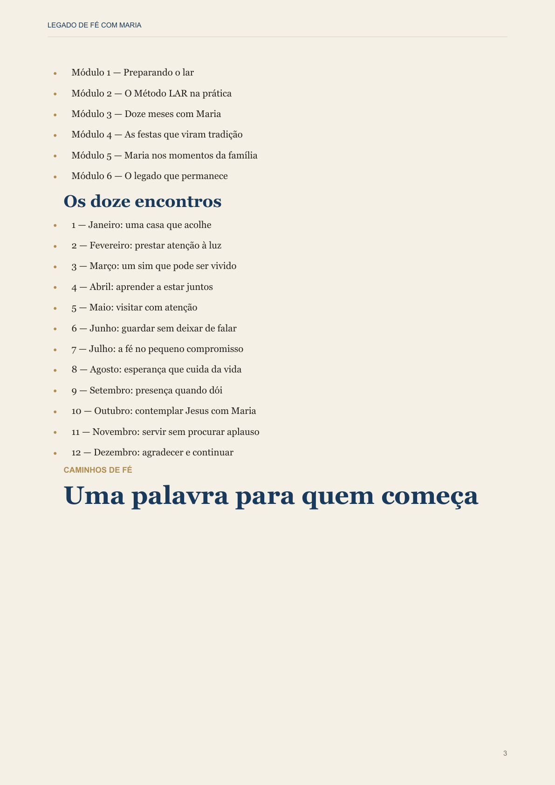
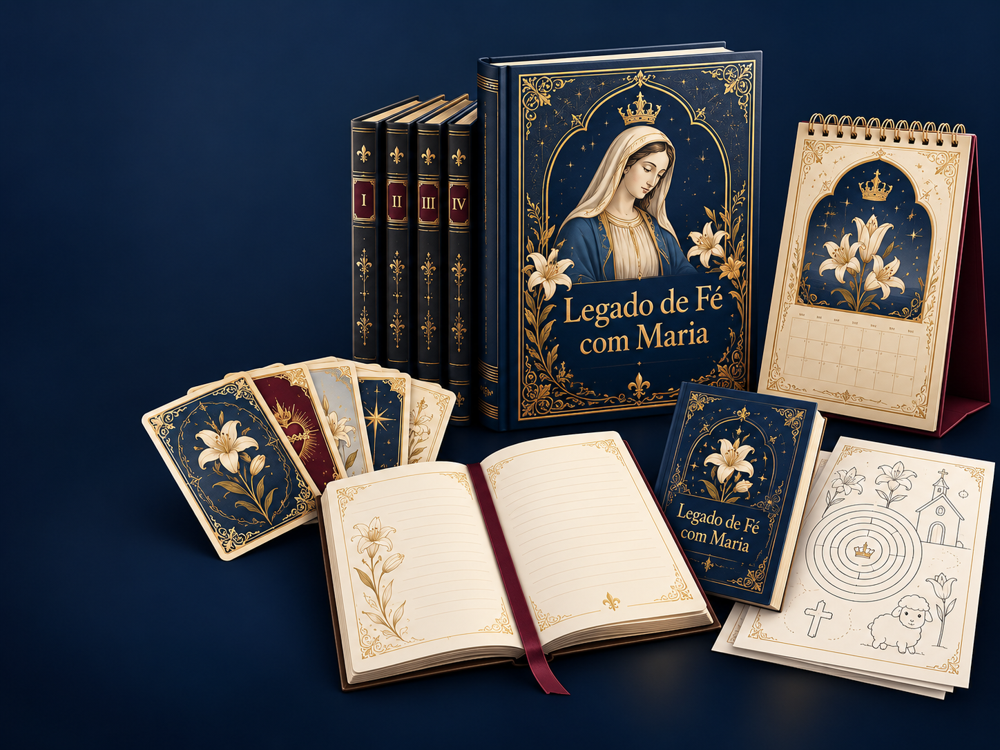
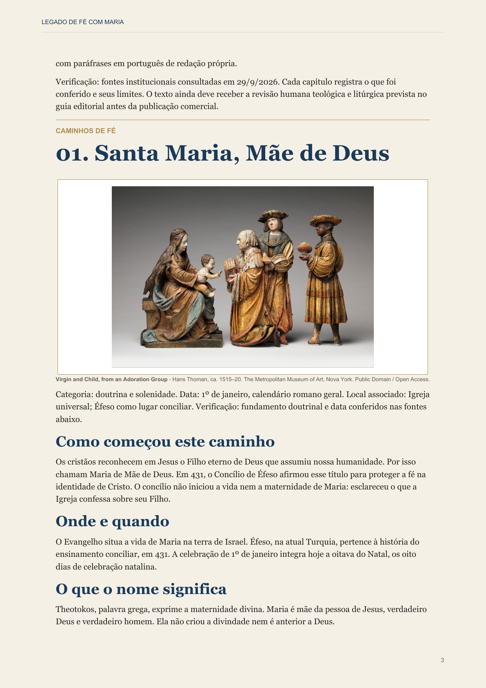

O caminho principal
Manual da jornada familiar
Seis módulos e 12 encontros já distribuídos ao longo do ano — você sabe por onde começar e o que fazer em seguida.
Para mães e avós que amam Nossa Senhora
Uma jornada de 12 encontros para rezar, conversar e criar memória de fé com filhos e netos — com simplicidade, beleza e Maria apontando para Jesus.
Quero receber o aviso de lançamento →Material digital para celular e impressão em casa. Você não precisa ser catequista.

Antes de levar para casa
Não é só uma coleção bonita: você recebe um caminho pronto, leituras organizadas e materiais para transformar alguns minutos em um encontro de família.

Seis módulos e 12 encontros já distribuídos ao longo do ano — você sabe por onde começar e o que fazer em seguida.

Histórias, festas, santuários e devoções apresentados com contexto, linguagem clara e espaço para conversar em família.
Uma história, uma festa ou um caminho de devoção a Maria.
Uma pergunta simples para a família olhar para a própria vida.
Uma intenção, uma oração e um gesto possível para a semana.
O que já existe em você
A fé não precisa competir com a rotina. Quando ganha uma história, uma conversa e uma oração possível, ela deixa de ser uma lembrança bonita e passa a ser parte da vida da família.
Uma casa que reza
Ele começa em gestos repetidos: uma vela acesa, uma intenção dita em voz alta, uma história de Maria que uma criança aprende a guardar.
Um caminho gentil para famílias reais, com pouco tempo e muita vontade de transmitir o que importa.
O roteiro já está pronto. Você abre o encontro, conduz a conversa e reza no ritmo da sua casa.
Maria aparece como Mãe e discípula, sempre levando o olhar da família para Jesus.
O Método LAR
Conheça uma história, uma festa ou um caminho de devoção a Maria em linguagem clara e cuidadosa.
Converse sobre a vida da família com uma pergunta que todos podem responder — sem aula e sem constrangimento.
Escolham uma intenção, façam uma oração e levem um gesto pequeno para os próximos dias.
Lembrar · 3 minutos. Maria é chamada Mãe de Deus porque Jesus, seu Filho, é verdadeiro Deus e verdadeiro homem.
Aproximar · 3 minutos. “O que podemos fazer para alguém da nossa casa se sentir mais escutado nesta semana?”
Rezar · 3 minutos. Uma intenção, uma oração e um gesto possível para viver em família.
Veja como é
O manual organiza seis módulos e 12 encontros. Ele foi feito para dar segurança a quem quer começar, mesmo sem experiência para guiar uma conversa de fé.
O acervo de Maria
A coleção Caminhos de Maria percorre celebrações, santuários, imagens, padroeiras e povos com distinção entre ensinamento, tradição e relato local.
As festas que ajudam a viver o ano com Maria.
Histórias, lugares e discernimento.
Devoções que atravessam gerações.
Cuidados confiados à intercessão de Maria.
O que chega à família
Cada material existe para que a devoção seja praticada, não apenas admirada. Arquivos digitais preparados para leitura no celular e impressão doméstica.
Seis módulos, 12 encontros e roteiros para transformar intenção em um momento real de família.
Quatro volumes com 52 títulos para descobrir e conversar ao longo do ano.
Recursos para imprimir, registrar intenções e levar a oração para a semana.
A coleção em suas mãos
Manual, quatro volumes, cartões, calendário e caderno reunidos como um pequeno acervo de fé em casa.
Ferramentas que ajudam a família a lembrar, registrar intenções e seguir rezando entre um encontro e outro.
Fé com cuidado
Maria é apresentada como Mãe de Jesus, discípula e intercessora — nunca como substituta da fé em Cristo.
Imagens, objetos e devoções aparecem como sinais que ajudam a rezar, jamais como amuletos ou efeitos automáticos.
Os volumes distinguem ensinamento da Igreja, tradição e relatos locais, com referências para continuar aprendendo.
Um convite para guardar
Uma coleção feita para voltar à mesa da família, com calma, verdade e uma devoção que pode atravessar gerações.
Perguntas frequentes
Não. Os encontros foram escritos em linguagem simples e trazem o caminho pronto para conduzir uma conversa de fé em casa.
Cerca de 12 minutos. O ritmo pode ser adaptado à realidade da família.
Não. É uma coleção de arquivos digitais em PDF, preparada para leitura no celular e impressão doméstica.
Não. É um material devocional e educativo para a vida familiar, complementar à caminhada da Igreja.
Sim. Você pode começar no seu ritmo e convidar a família aos poucos, sem pressão.